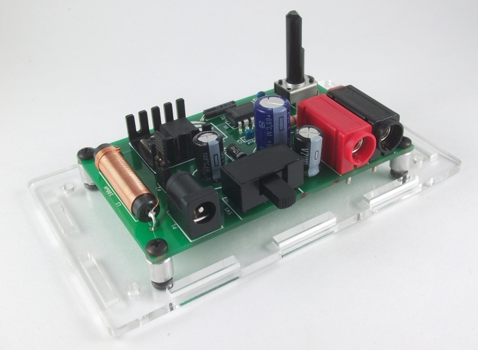
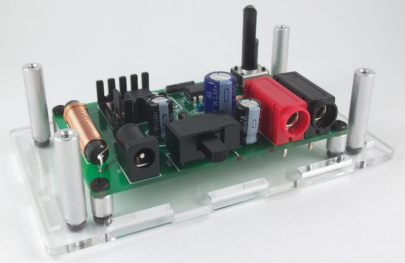
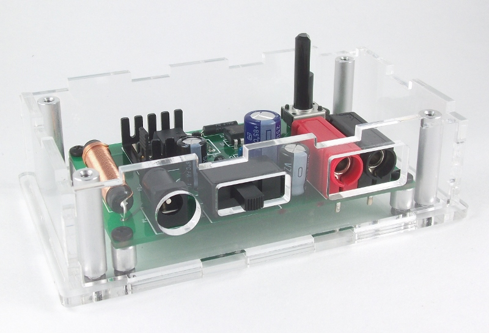
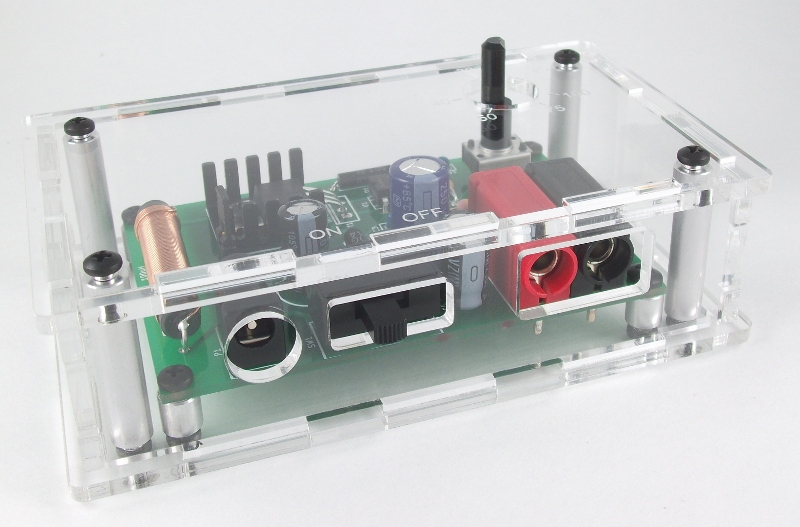
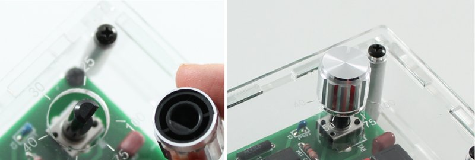
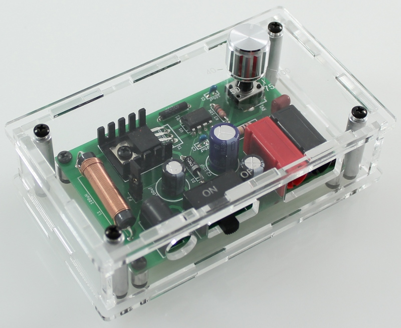

Assembly Step 2: Enclosure assembly¶
Assembly Instructions¶
Mount the assembled PCB onto the acrylic enclosure base¶
Mount the assembled PCB onto the four short (1/4”) round standoffs using the four smaller (3/16”) screws and mount the PCB onto the clear acrylic base with four of the 1/4” screws.

Place the four longer (1”) round standoffs in each corner¶
The standofs are used to secure the top and the enclosure.

Place the four sides onto the clear base¶

Place the top onto the case and secure with the remaining four 1/4” screws¶

Mount the knob onto the flat side of the potentiometer.¶
With this style of button, there is a notch which you line up with the flat side of the potentiometer. Push the button all the way down onto the potentiometer. It is a tight fit so you have to push with some force but the knob should fit into the top hole on the enclosure.

Image of the final assembled device¶
